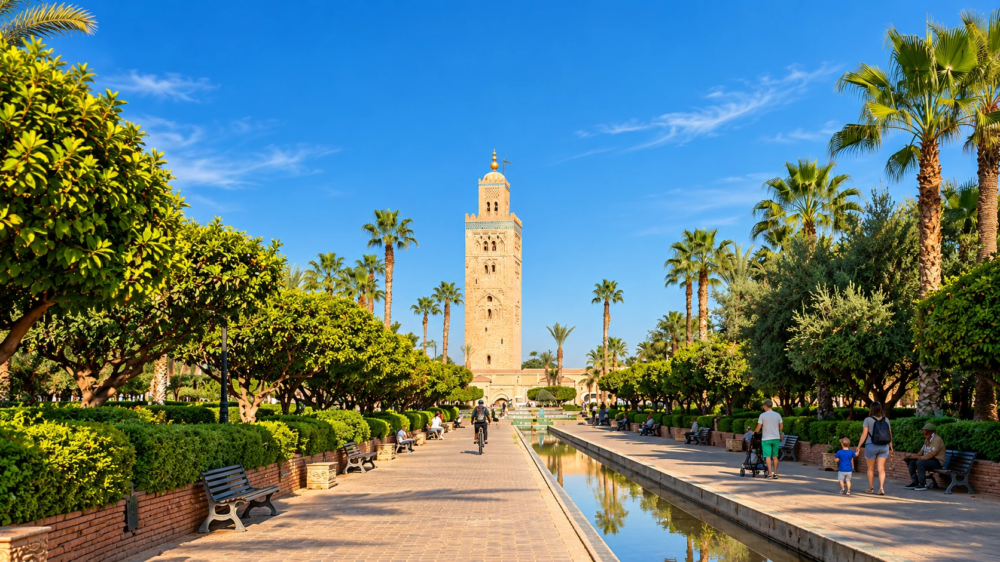
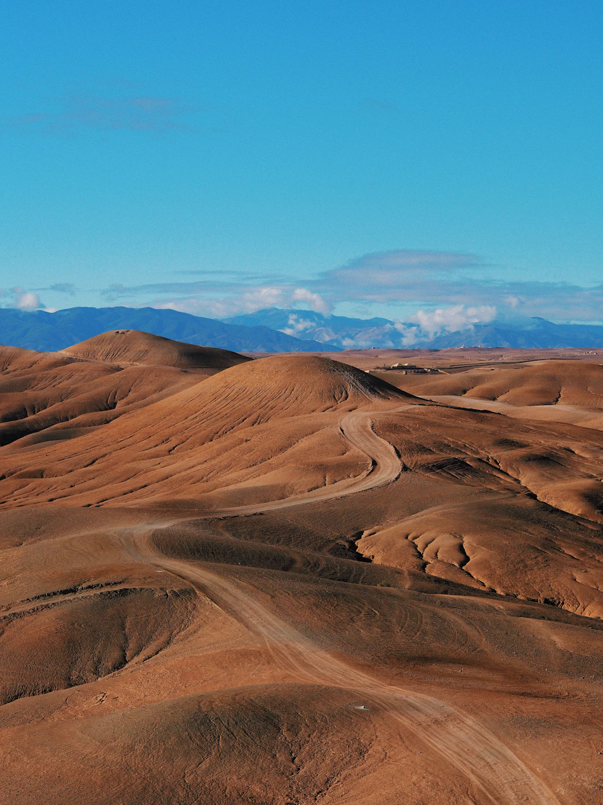

Find what draws you here
Browse the journeys and save a few favorites. A destination, a photograph or an idea is enough to begin.

SCROLL TO DISCOVER ↓✳ MOROCCO WITH LAURA LUXURY JOURNEYS
A morning in the medina, a road through the Atlas, an evening beside the dunes. Discover Morocco with a little more time for the things you love.
Explore the journeysWAYS TO EXPLORE
Follow the coast, spend a night in the Sahara or step away from the city for the day. Find a journey that speaks to you, and we’ll help you make it your own.
We haven’t found a match. Try another destination, or browse all our journeys.
Something caught your eye? Explore the itinerary, then tell us when you’d like to go.

AGAFAY · THE QUIETER HOURSTWO DIFFERENT DESERTS
An evening among rocky hills or a night beside the great dunes? Both have their appeal. The choice begins with how much time you have.
PLACES THAT DRAW YOU IN
The energy of Marrakech, the quiet of the dunes, the Atlantic breeze. Start with the place you’re drawn to.
LET’S MAKE A PLAN
Perhaps you have a route in mind. Perhaps it’s a desert evening, a beautiful riad or simply a change of scene. Tell us what draws you to Morocco, and we’ll take it from there.
Browse the journeys and save a few favorites. A destination, a photograph or an idea is enough to begin.
Share your dates, who’s coming and the places you’d love to see. Your preferred stays, budget and pace help us make the plan feel right.
Review your itinerary, stays, transport and price with us. You’ll know what’s included and the cancellation terms before deciding to book.
BEFORE YOU PACK
A good journey begins with knowing what matters to you. A little local perspective can help you find your pace, your place to stay and your moment to go.
A FEW THINGS YOU MAY BE WONDERING
You’ll have a reference for your request, which is the starting point for planning your trip. Your itinerary, stays, transport, total price and cancellation terms are agreed before booking. Enquiring does not reserve a trip, and no payment is taken here.
Yes. We plan your journey for you and the people you’re traveling with. Your road transport is reserved for you and your companions. If an activity or venue welcomes other guests, we’ll make that clear in your proposal.
Your proposal will set out the accommodation, transport, meals, local assistance and activities included for your dates, with optional extras shown separately. We’ll go through the details together before you book.
Of course. Tell us what you’d like to change. An extra desert night, more time on the coast or a slower day in Marrakech can make the trip feel much more like yours.
The Sahara dunes at Merzouga need a multi-day journey from Marrakech. For an afternoon or evening closer to the city, Agafay is a lovely alternative, with rocky hills and open views rather than sand dunes.
YOUR MOROCCO STARTS HERE
Bring your ideas, your dates or simply your curiosity. We’ll help you turn them into a trip to look forward to.